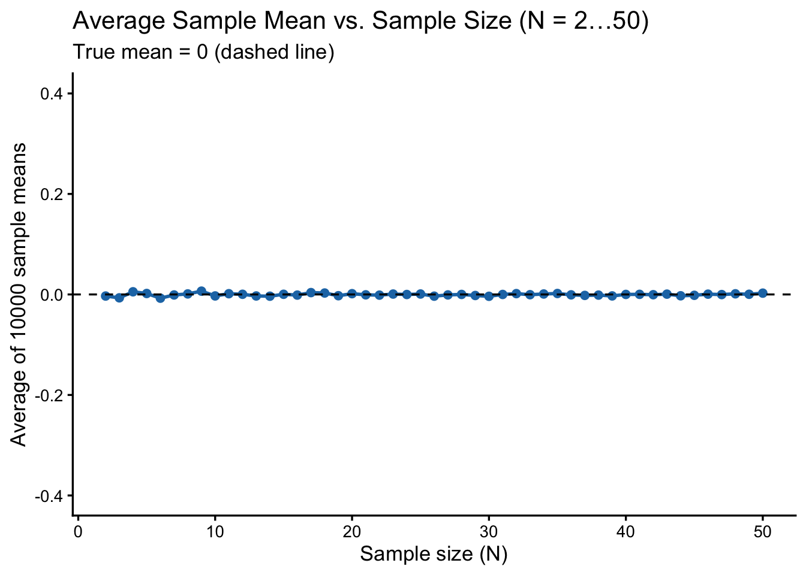
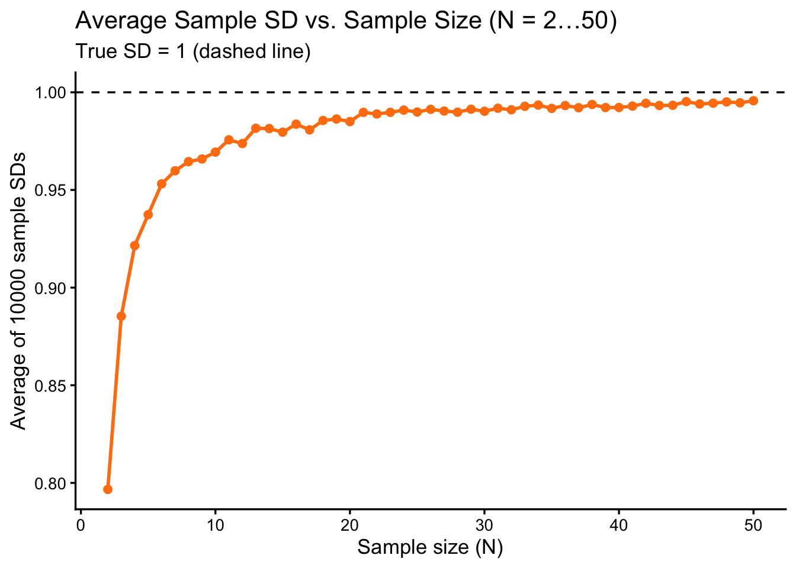

Here, we examine how sample size (N) affects estimates of the sample mean and sample standard deviation (SD). For each N = 2 to 50, draw 10000 samples from the standard normal distribution \(\mathcal{N}(0, 1)\). Then, compute mean and SD for each sample. After that, calculate the average of these estimates to see how close they are to the true values (mean = 0, SD = 1).
set.seed(2025)n_reps<-10000Ns<-2:50# generate all combinations of sample size (N) and replicate numberresults<-expand.grid( N =Ns, replic =seq_len(n_reps))%>%arrange(N, replic)# pre-calculate how many total simulations to run and # generate a vector of sample sizes for all rowsn_total<-nrow(results)Ns_vec<-results$N# system.time({# generate all random samples in one go (total number of draws = sum of all Ns)samples_all<-rnorm(sum(Ns_vec), mean =0, sd =1)# assign an ID to each sample, to keep track of which row (i.e., which N) it belongs torow_id<-rep(seq_along(Ns_vec), times =Ns_vec)# split the generated samples by rowsplit_samples<-split(samples_all, row_id)# compute sample mean and SD for each groupmeans<-sapply(split_samples, mean)sds<-sapply(split_samples, sd)# })# add results into the data frameresults$samp_mean<-meansresults$samp_sd<-sds# summarise the average sample mean and SD per sample size (N)summary2<-results%>%group_by(N)%>%summarize( avg_mean =mean(samp_mean), avg_sd =mean(samp_sd), .groups ="drop")# plot A: Average Sample Mean vs. Np_avg_mean<-ggplot(summary2, aes(x =N, y =avg_mean))+geom_point(color ="#1f77b4", size =2)+geom_line(color ="#1f77b4", size =1)+geom_hline(yintercept =0, linetype ="dashed", color ="black")+labs( title ="Average Sample Mean vs. Sample Size (N = 2…50)", subtitle ="True mean = 0 (dashed line)", x ="Sample size (N)", y ="Average of 10000 sample means")+coord_cartesian(ylim =c(-0.4, 0.4))+theme_classic(base_size =13)+theme( panel.grid.minor =element_blank())# plot B: Average Sample SD vs. Np_avg_sd<-ggplot(summary2, aes(x =N, y =avg_sd))+geom_point(color ="#ff7f0e", size =2)+geom_line(color ="#ff7f0e", size =1)+geom_hline(yintercept =1, linetype ="dashed", color ="black")+labs( title ="Average Sample SD vs. Sample Size (N = 2…50)", subtitle ="True SD = 1 (dashed line)", x ="Sample size (N)", y ="Average of 10000 sample SDs")+# coord_cartesian(ylim = c(-1.0, 1.0)) +theme_classic(base_size =13)+theme( panel.grid.minor =element_blank())# display the two plotsp_avg_mean

p_avg_sd

For small sample sizes, sample variance and standard deviation tend to be biased, as shown in the bottom plot, the average sample SD is clearly lower than 1 when N is small. Once N exceeds approximately 20, the average sample SD (and variance) gets much closer to 1, and the bias becomes negligible.
11 References
Cleasby IR, Burke T, Schroeder J, Nakagawa S. (2011) Food supplements increase adult tarsus length, but not growth rate, in an island population of house sparrows (Passer domesticus). BMC Research Notes. 4:1-1. doi: 10.1186/1756-0500-4-431
Drummond H, Rodriguez C, Ortega S. (2025). Long-Term Insights into Who Benefits from Brood Reduction. Behavioral Ecology. doi: 10.1093/beheco/araf050
Mizuno A, Soma M. (2023) Pre-existing visual preference for white dot patterns in estrildid finches: a comparative study of a multi-species experiment. Royal Society Open Science. 10:231057. doi: 10.1098/rsos.231057
Lundgren EJ, Ramp D, Middleton OS, Wooster EI, Kusch E, Balisi M, Ripple WJ, Hasselerharm CD, Sanchez JN, Mills M, Wallach AD. (2022) A novel trophic cascade between cougars and feral donkeys shapes desert wetlands. Journal of Animal Ecology. 91:2348-57. doi: 10.1111/1365-2656.13766
Aki Vehtari, Andrew Gelman, Daniel Simpson, Bob Carpenter, Paul-Christian Bürkner (2021). Rank-Normalization, Folding, and Localization: An Improved Rhat for Assessing Convergence of MCMC (with Discussion). Bayesian Analysis. 16:667-718. doi: 10.1214/20-BA1221
12 Information about R session
This section shows the current R session information, including R version, platform, and loaded packages.
---title: "Simulation"---```{r}#| label: load_packages#| echo: false# Load required packagespacman::p_load(## data manipulation dplyr, tibble, tidyverse, broom, broom.mixed,## model fitting ape, arm, brms, broom.mixed, cmdstanr, emmeans, glmmTMB, MASS, phytools, rstan, TreeTools,## model checking and evaluation DHARMa, loo, MuMIn, parallel,## visualisation bayesplot, ggplot2, patchwork, tidybayes,## reporting and utilities gt, here, kableExtra, knitr)```Here, we examine how sample size (N) affects estimates of the sample mean and sample standard deviation (SD).For each N = 2 to 50, draw 10000 samples from the standard normal distribution $\mathcal{N}(0, 1)$. Then, compute mean and SD for each sample. After that, calculate the average of these estimates to see how close they are to the true values (mean = 0, SD = 1).```{r}#| echo: false#| eval: false## 1. simulation settings# set.seed(2025)# n_reps <- 10000 # replicates per N# Ns <- 2:50 # N = 2, 3, 4, …, 50# # 2. simulate draws and compute sample mean & SD for each combination of N and replicate# ## create a data frame with all combinations of N and replication number# ## in this case, for N = 2 to 50 and 10000 replicates per N, this create 49*1000 = 49000 rows# results <- expand.grid(# N = Ns,# replic = seq_len(n_reps) # replicate number from 1 to 1000# ) %>%# arrange(N, replic) %>% # sort by N and replicate number# mutate(# samp_mean = NA_real_, # placeholder for sample mean# samp_sd = NA_real_ # placeholder for sample SD# )# # loop through each N and compute sample mean and SD# for (i in seq_len(nrow(results))) {# N <- results$N[i] # extract the sample size for this row# x <- rnorm(N, mean = 0, sd = 1) # simulate N random values from N(0,1)# results$samp_mean[i] <- mean(x) # compute and store the sample mean# results$samp_sd[i] <- sd(x) # compute and store the sample SD# }# # 3. for each sample size N, compute the average sample mean and average sample SD across all replicates# summary2 <- results %>%# group_by(N) %>%# summarize(# avg_mean = mean(samp_mean),# avg_sd = mean(samp_sd)# ) %>%# ungroup()# # 4. plot A: Average Sample Mean vs. N# p_avg_mean <- ggplot(summary2, aes(x = N, y = avg_mean)) +# geom_point(color = "#1f77b4", size = 2) +# geom_line(color = "#1f77b4", size = 1) +# geom_hline(yintercept = 0, linetype = "dashed", color = "black") +# labs(# title = "Average Sample Mean vs. Sample Size (N = 2…50)",# subtitle = "True mean = 0 (dashed line)",# x = "Sample size (N)",# y = "Average of 10000 sample means"# ) +# theme_classic(base_size = 13) +# theme(# panel.grid.minor = element_blank()# )# # 5. plot B: Average Sample SD vs. N# p_avg_sd <- ggplot(summary2, aes(x = N, y = avg_sd)) +# geom_point(color = "#ff7f0e", size = 2) +# geom_line(color = "#ff7f0e", size = 1) +# geom_hline(yintercept = 1, linetype = "dashed", color = "black") +# labs(# title = "Average Sample SD vs. Sample Size (N = 2…50)",# subtitle = "True SD = 1 (dashed line)",# x = "Sample size (N)",# y = "Average of 10000 sample SDs"# ) +# theme_classic(base_size = 13) +# theme(# panel.grid.minor = element_blank()# )# # 6. display the two plots# p_avg_mean# p_avg_sd``````{r}set.seed(2025)n_reps <-10000Ns <-2:50# generate all combinations of sample size (N) and replicate numberresults <-expand.grid(N = Ns,replic =seq_len(n_reps)) %>%arrange(N, replic)# pre-calculate how many total simulations to run and # generate a vector of sample sizes for all rowsn_total <-nrow(results)Ns_vec <- results$N# system.time({# generate all random samples in one go (total number of draws = sum of all Ns)samples_all <-rnorm(sum(Ns_vec), mean =0, sd =1)# assign an ID to each sample, to keep track of which row (i.e., which N) it belongs torow_id <-rep(seq_along(Ns_vec), times = Ns_vec)# split the generated samples by rowsplit_samples <-split(samples_all, row_id)# compute sample mean and SD for each groupmeans <-sapply(split_samples, mean)sds <-sapply(split_samples, sd)# })# add results into the data frameresults$samp_mean <- meansresults$samp_sd <- sds# summarise the average sample mean and SD per sample size (N)summary2 <- results %>%group_by(N) %>%summarize(avg_mean =mean(samp_mean),avg_sd =mean(samp_sd),.groups ="drop" )# plot A: Average Sample Mean vs. Np_avg_mean <-ggplot(summary2, aes(x = N, y = avg_mean)) +geom_point(color ="#1f77b4", size =2) +geom_line(color ="#1f77b4", size =1) +geom_hline(yintercept =0, linetype ="dashed", color ="black") +labs(title ="Average Sample Mean vs. Sample Size (N = 2…50)",subtitle ="True mean = 0 (dashed line)",x ="Sample size (N)",y ="Average of 10000 sample means" ) +coord_cartesian(ylim =c(-0.4, 0.4)) +theme_classic(base_size =13) +theme(panel.grid.minor =element_blank() )# plot B: Average Sample SD vs. Np_avg_sd <-ggplot(summary2, aes(x = N, y = avg_sd)) +geom_point(color ="#ff7f0e", size =2) +geom_line(color ="#ff7f0e", size =1) +geom_hline(yintercept =1, linetype ="dashed", color ="black") +labs(title ="Average Sample SD vs. Sample Size (N = 2…50)",subtitle ="True SD = 1 (dashed line)",x ="Sample size (N)",y ="Average of 10000 sample SDs" ) +# coord_cartesian(ylim = c(-1.0, 1.0)) +theme_classic(base_size =13) +theme(panel.grid.minor =element_blank() )# display the two plotsp_avg_meanp_avg_sd```For small sample sizes, sample variance and standard deviation tend to be biased, as shown in the bottom plot, the average sample SD is clearly lower than 1 when N is small.Once N exceeds approximately 20, the average sample SD (and variance) gets much closer to 1, and the bias becomes negligible.# References- Cleasby IR, Burke T, Schroeder J, Nakagawa S. (2011) Food supplements increase adult tarsus length, but not growth rate, in an island population of house sparrows (Passer domesticus). *BMC Research Notes*. 4:1-1. doi: 10.1186/1756-0500-4-431- Drummond H, Rodriguez C, Ortega S. (2025). Long-Term Insights into Who Benefits from Brood Reduction. *Behavioral Ecology*. doi: 10.1093/beheco/araf050- Mizuno A, Soma M. (2023) Pre-existing visual preference for white dot patterns in estrildid finches: a comparative study of a multi-species experiment. *Royal Society Open Science*. 10:231057. doi: 10.1098/rsos.231057- Lundgren EJ, Ramp D, Middleton OS, Wooster EI, Kusch E, Balisi M, Ripple WJ, Hasselerharm CD, Sanchez JN, Mills M, Wallach AD. (2022) A novel trophic cascade between cougars and feral donkeys shapes desert wetlands. *Journal of Animal Ecology*. 91:2348-57. doi: 10.1111/1365-2656.13766- Aki Vehtari, Andrew Gelman, Daniel Simpson, Bob Carpenter, Paul-Christian Bürkner (2021). Rank-Normalization, Folding, and Localization: An Improved Rhat for Assessing Convergence of MCMC (with Discussion). *Bayesian Analysis*. 16:667-718. doi: 10.1214/20-BA1221# Information about `R` sessionThis section shows the current `R` session information, including `R` version, platform, and loaded packages.```{r}sessionInfo()```